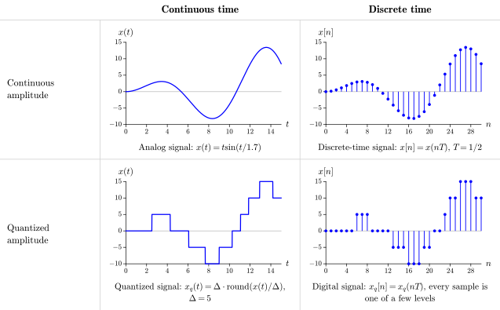
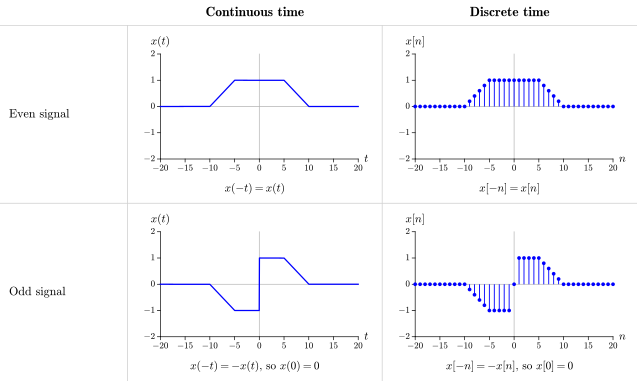
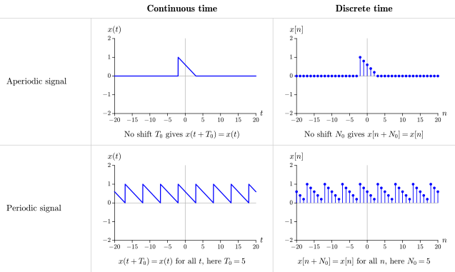
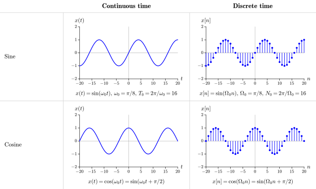
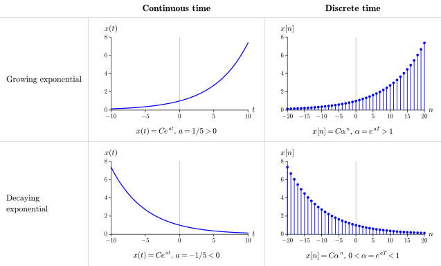
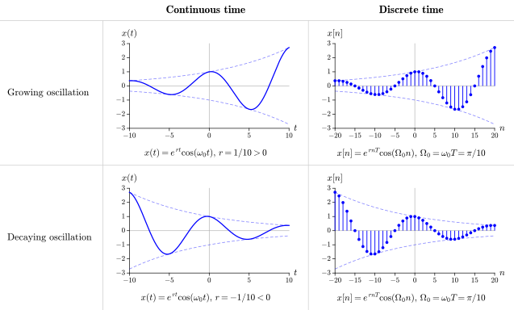
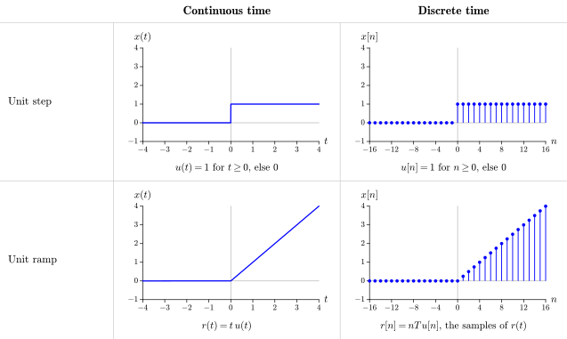
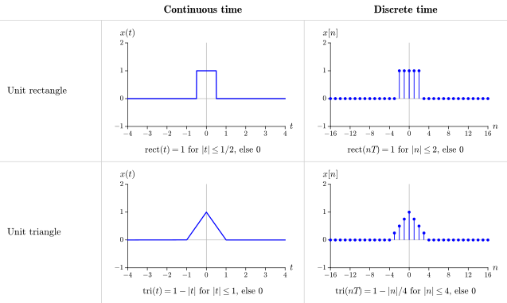
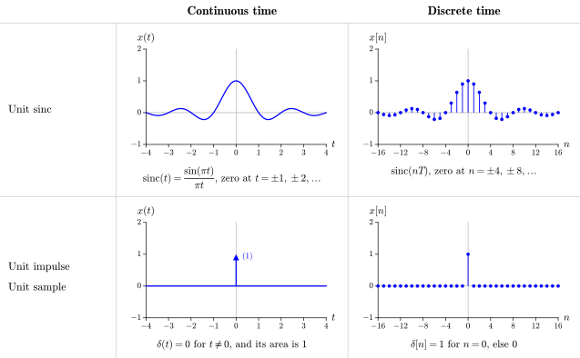

Signals and Sequences#
Prerequisites#
# HIDE/SHOW
# ! pip install -U numpy
# ! pip install -U matplotlib
Visualization in Python#
The folder of this notebook holds a small module, sigplot, with classes for signals, systems and time axes, and a matplotlib renderer. Labels are set in Computer Modern through matplotlib’s mathtext, so no TeX installation is needed.
# HIDE/SHOW
import warnings
warnings.filterwarnings('ignore')
import numpy as np
import matplotlib.pyplot as plt
%matplotlib inline
%config InlineBackend.figure_formats = ['svg']
%config InlineBackend.print_figure_kwargs = {'bbox_inches': None} # keep every figure at its full width
plt.rcParams['svg.hashsalt'] = 'dsp' # reproducible SVG output
from sigplot import Signal, Step, Ramp, Rect, Tri, Sinc, Impulse, ComplexExponential, Sinusoid, Exponential, show
Utilizations#
The module is built from three small class families. Each has one method that its subclasses override, so the same call does the right thing for every member.
Base class |
Subclasses |
Overridden |
|
|---|---|---|---|
Signal |
|
|
|
System |
|
|
|
Time axis |
|
|
|
A signal is an object that is called with an array of time values. A new signal is a subclass of Signal with its own values; its first docstring line is its name, written as continuous-time name | discrete-time name where the two differ. Signals add, subtract and scale like numbers, and shift, scale, reverse, even, odd, repeat and quantize return new signals, which named gives a name. One signal is drawn on both time axes, so one object fills both columns:
|
|
|
|---|---|---|
Variable |
\(t\), a real number |
\(n\), an integer |
Notation |
\(x(t)\) |
\(x[n]\) |
Values |
|
|
Drawn as |
a curve |
a stem with a dot for every sample |
Impulse |
an arrow that carries its area |
the sample itself |
The sequence is made of samples of the signal, \(x[n]=x(nT)\). The sampling period is T=1 unless a figure sets another one, and the discrete-time axis always counts samples.
show(a, b, notes=[...]) draws the signals a and b as two rows: their names in the first column, then one plot per time axis. notes holds the text that goes right under the plots, for every signal a pair (continuous, discrete) or one text for both. span and ylim set the time axis and the amplitude axis of a figure, and reference draws a second signal in grey behind every signal. The cells are equally wide in every figure and every plot has the same size, so the plots line up down the whole page.
What are Signals?#
Signals convey information.
Signals are represented as mathematical functions of one or more independent variables.
On this page a signal is a function of one independent variable, time.
Types of Signals#
Continuous-time (CT) signals: defined at every instant \(t\)
Discrete-time (DT) signals, or sequences: defined only at the integers \(n\)
Quantized signals: the amplitude takes only a finite set of levels
Digital signals: discrete in time and quantized in amplitude
# HIDE/SHOW
class Wave(Signal):
"""Continuous amplitude"""
def values(self, t):
return t * np.sin(t / 1.7)
analog = Wave()
stepped = analog.quantize(5).named('Quantized amplitude')
show(analog, stepped, span=(0, 15), ylim=(-10, 15), T=0.5, notes=[
(r'Analog signal: $x(t)=t\sin(t/1.7)$',
r'Discrete-time signal: $x[n]=x(nT)$, $T=1/2$'),
(r'Quantized signal: $x_q(t)=\Delta\cdot\mathrm{round}(x(t)/\Delta)$, $\Delta=5$',
r'Digital signal: $x_q[n]=x_q(nT)$, every sample is one of a few levels')])

The two columns translate into each other term by term:
Continuous time |
Discrete time |
|
|---|---|---|
Signal |
\(x(t)\), \(t\in\mathbb{R}\) |
\(x[n]\), \(n\in\mathbb{Z}\) |
From one to the other |
reconstruction from the samples |
sampling: \(x[n]=x(nT)\) |
Running sum |
integral \(\displaystyle \int_{-\infty}^{t}x(\tau)\,d\tau\) |
sum \(\displaystyle \sum_{k=-\infty}^{n}x[k]\) |
Rate of change |
derivative \(\dfrac{dx(t)}{dt}\) |
first difference \(x[n]-x[n-1]\) |
Energy |
\(\displaystyle E=\int_{-\infty}^{\infty}\lvert x(t)\rvert^2\,dt\) |
\(\displaystyle E=\sum_{n=-\infty}^{\infty}\lvert x[n]\rvert^2\) |
Period |
\(x(t+T_0)=x(t)\), \(T_0\) real |
\(x[n+N_0]=x[n]\), \(N_0\) an integer |
Frequency |
\(\omega_0\) in rad/s, any value is a new signal |
\(\Omega_0=\omega_0T\) in rad/sample, \(\Omega_0\) and \(\Omega_0+2\pi\) give the same sequence |
Unit step |
\(u(t)\) |
\(u[n]\) |
Unit impulse |
\(\delta(t)=\dfrac{du(t)}{dt}\), area 1 |
\(\delta[n]=u[n]-u[n-1]\), value 1 |
\(T\) is the sampling period and \(f_s=1/T\) the sampling frequency. Quantization is a separate step that acts on the amplitude; everything else on this page concerns time, so all remaining signals keep a continuous amplitude.
Classes of Signals#
Five classes of signals are used on this page. Each of them is shown in two cases.
Even and Odd Signals#
An even signal is its own mirror image about \(t=0\). An odd signal is its own mirror image with the sign reversed. Every signal is the sum of an even part \(\tfrac12[x(t)+x(-t)]\) and an odd part \(\tfrac12[x(t)-x(-t)]\); both rows are made from one one-sided pulse in this way.
# HIDE/SHOW
class Pulse(Signal):
"""One-sided pulse: flat from 0 to 5, then down to zero at 10"""
def values(self, t): # the value at the jump is the mean of both sides
return np.where(t == 0, 1.0, np.where((t > 0) & (t <= 5), 2.0, np.clip(2 * (10 - t) / 5, 0, 2) * (t > 5)))
pulse = Pulse()
even = pulse.even().named('Even signal')
odd = pulse.odd().named('Odd signal')
show(even, odd, span=(-20, 20), ylim=(-2, 2), notes=[
('$x(-t)=x(t)$',
'$x[-n]=x[n]$'),
('$x(-t)=-x(t)$, so $x(0)=0$',
'$x[-n]=-x[n]$, so $x[0]=0$')])

Aperiodic and Periodic Signals#
A periodic signal repeats itself after a shift by its period. The smallest such shift is the fundamental period, \(T_0\) or \(N_0\). The second row repeats the pulse of the first row every 5 units of time.
# HIDE/SHOW
class Tooth(Signal):
"""One tooth: from 1 at t = 0 down to zero at t = 5"""
def values(self, t):
return np.where((t >= 0) & (t < 5), 1 - t / 5, 0.0)
tooth = Tooth()
aperiodic = tooth.shift(2).named('Aperiodic signal')
periodic = tooth.repeat(5).shift(2).named('Periodic signal')
show(aperiodic, periodic, span=(-20, 20), ylim=(-2, 2), notes=[
('No shift $T_0$ gives $x(t+T_0)=x(t)$',
'No shift $N_0$ gives $x[n+N_0]=x[n]$'),
('$x(t+T_0)=x(t)$ for all $t$, here $T_0=5$',
'$x[n+N_0]=x[n]$ for all $n$, here $N_0=5$')])

Sinusoidal Signals#
The sinusoid \(A\cos(\omega_0t+\phi)\) has the amplitude \(A\), the angular frequency \(\omega_0\) and the phase \(\phi\). The sine is odd and the cosine is even; one is the other shifted by a quarter of a period. Over continuous time a sinusoid is periodic for every \(\omega_0\). Over discrete time it is periodic only if \(\Omega_0/2\pi\) is a ratio of integers.
# HIDE/SHOW
sine = Sinusoid(omega=np.pi / 8, phi=-np.pi / 2, name='Sine')
cosine = Sinusoid(omega=np.pi / 8, name='Cosine')
show(sine, cosine, span=(-20, 20), ylim=(-2, 2), notes=[
(r'$x(t)=\sin(\omega_0t)$, $\omega_0=\pi/8$, $T_0=2\pi/\omega_0=16$',
r'$x[n]=\sin(\Omega_0n)$, $\Omega_0=\pi/8$, $N_0=2\pi/\Omega_0=16$'),
(r'$x(t)=\cos(\omega_0t)=\sin(\omega_0t+\pi/2)$',
r'$x[n]=\cos(\Omega_0n)=\sin(\Omega_0n+\pi/2)$')])

Real Exponential Signals#
In \(x(t)=Ce^{at}\) both \(C\) and \(a\) are real. The sign of \(a\) decides between growth and decay, and \(x(0)=C\). The samples form a geometric sequence \(C\alpha^n\) with the ratio \(\alpha=e^{aT}\). In this figure \(C=1\) and \(T=1/2\).
# HIDE/SHOW
growth = Exponential(a=1 / 5, name='Growing exponential')
decay = Exponential(a=-1 / 5, name='Decaying exponential')
show(growth, decay, span=(-10, 10), ylim=(0, 8), T=0.5, notes=[
(r'$x(t)=Ce^{at}$, $a=1/5>0$',
r'$x[n]=C\alpha^n$, $\alpha=e^{aT}>1$'),
(r'$x(t)=Ce^{at}$, $a=-1/5<0$',
r'$x[n]=C\alpha^n$, $0<\alpha=e^{aT}<1$')])

Complex Exponential Signals#
In \(x(t)=Ce^{st}\) the exponent \(s=r+j\omega_0\) is complex. With \(C=\lvert C\rvert e^{j\phi}\) the real part of the signal is \(\lvert C\rvert e^{rt}\cos(\omega_0t+\phi)\): a sinusoid inside the envelope \(\pm\lvert C\rvert e^{rt}\), which is drawn dashed. For \(r=0\) the envelope is flat and the signal is the sinusoid of the section before. In this figure \(\lvert C\rvert=1\), \(\phi=0\), \(\omega_0=\pi/5\) and \(T=1/2\).
# HIDE/SHOW
growing = ComplexExponential(r=1 / 10, omega=np.pi / 5, name='Growing oscillation')
decaying = ComplexExponential(r=-1 / 10, omega=np.pi / 5, name='Decaying oscillation')
show(growing, decaying, span=(-10, 10), ylim=(-3, 3), T=0.5, notes=[
(r'$x(t)=e^{rt}\cos(\omega_0t)$, $r=1/10>0$',
r'$x[n]=e^{rnT}\cos(\Omega_0n)$, $\Omega_0=\omega_0T=\pi/10$'),
(r'$x(t)=e^{rt}\cos(\omega_0t)$, $r=-1/10<0$',
r'$x[n]=e^{rnT}\cos(\Omega_0n)$, $\Omega_0=\omega_0T=\pi/10$')])

Elementary Signals#
Six signals from which most other signals are built. Each is one unit high, and one unit wide where it has a width. The sequences in this section are their samples with \(T=1/4\), so one unit of time is four samples.
Unit Step and Unit Ramp#
The unit step (Heaviside function) switches on at \(t=0\). The unit ramp (ReLU) is its running integral: zero before \(t=0\), then a line of slope 1.
# HIDE/SHOW
show(Step(), Ramp(), span=(-4, 4), ylim=(-1, 4), T=0.25, notes=[
(r'$u(t)=1$ for $t\geq0$, else $0$',
r'$u[n]=1$ for $n\geq0$, else $0$'),
(r'$r(t)=t\,u(t)$',
r'$r[n]=nT\,u[n]$, the samples of $r(t)$')])

Unit Rectangle and Unit Triangle#
The unit rectangle is a pulse of width 1 and height 1, centred at \(t=0\). The unit triangle has the same height and area, on a base of width 2; it is the rectangle convolved with itself.
# HIDE/SHOW
show(Rect(), Tri(), span=(-4, 4), ylim=(-1, 2), T=0.25, notes=[
(r'$\mathrm{rect}(t)=1$ for $|t|\leq1/2$, else $0$',
r'$\mathrm{rect}(nT)=1$ for $|n|\leq2$, else $0$'),
(r'$\mathrm{tri}(t)=1-|t|$ for $|t|\leq1$, else $0$',
r'$\mathrm{tri}(nT)=1-|n|/4$ for $|n|\leq4$, else $0$')])

Unit Sinc and Unit Impulse#
The unit sinc is 1 at \(t=0\) and crosses zero at every other integer. The unit impulse (delta function) is the limit of a pulse of area 1 whose width goes to zero: it is zero everywhere except at \(t=0\), and it is drawn as an arrow with its area beside it. Over discrete time the impulse is an ordinary sample of value 1.
# HIDE/SHOW
show(Sinc(), Impulse(), span=(-4, 4), ylim=(-1, 2), T=0.25, notes=[
(r'$\mathrm{sinc}(t)=\dfrac{\sin(\pi t)}{\pi t}$, zero at $t=\pm1,\pm2,\ldots$',
r'$\mathrm{sinc}(nT)$, zero at $n=\pm4,\pm8,\ldots$'),
(r'$\delta(t)=0$ for $t\neq0$, and its area is $1$',
r'$\delta[n]=1$ for $n=0$, else $0$')])

The six signals are related to each other:
Continuous time |
Discrete time |
|
|---|---|---|
Step from impulse |
\(\displaystyle u(t)=\int_{-\infty}^{t}\delta(\tau)\,d\tau\) |
\(\displaystyle u[n]=\sum_{k=-\infty}^{n}\delta[k]\) |
Impulse from step |
\(\delta(t)=\dfrac{du(t)}{dt}\) |
\(\delta[n]=u[n]-u[n-1]\) |
Ramp from step |
\(\displaystyle r(t)=\int_{-\infty}^{t}u(\tau)\,d\tau=t\,u(t)\) |
\(r[n]=n\,u[n]\) |
Rectangle from steps |
\(\mathrm{rect}(t)=u(t+\tfrac12)-u(t-\tfrac12)\) |
\(u[n+M]-u[n-M-1]\), which is \(2M+1\) samples wide |
Triangle from ramps |
\(\mathrm{tri}(t)=r(t+1)-2r(t)+r(t-1)\) |
the same sum of three shifted ramps |
Sampling property |
\(\displaystyle \int_{-\infty}^{\infty}x(t)\,\delta(t-t_0)\,dt=x(t_0)\) |
\(\displaystyle \sum_{n=-\infty}^{\infty}x[n]\,\delta[n-n_0]=x[n_0]\) |